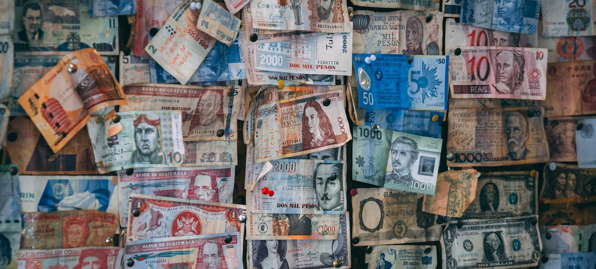
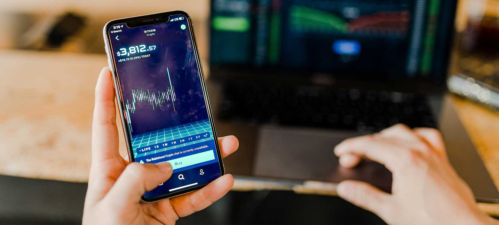

Remittances can be used for any type of payment including invoices or other obligations. But the term is typically used to refer to money sent to family members back in a person's home country.

Currency Exchange
A currency exchange is a business that has the legal right to exchange one currency for another to its customers. Currency exchange of physical money (coins and paper bills), is usually done over a counter at a teller station. Currency exchange businesses that operate such transactions can be found in a variety of forms and venues. It may be a stand-alone, small business operating out of a single office, or it may be a larger chain of small exchange-service booths at airports, or it may be a large international bank offering currency exchange services at its teller stations.

Financial Services
According to the Finance and Development department of the International Monetary Fund (IMF), a financial service is best described as the process by which a consumer or business acquires a financial good.For example, a payment system provider is providing a financial service when it is able to accept and transfer funds from a to a recipient. This includes accounts that are settled through credit and , checks, and electronic funds transfers.
Making sure your hard work goes further
Our customers work hard for their money, so we're making it easier to send it. We'll get your money to those who need it quickly, securely, and at a low-cost.